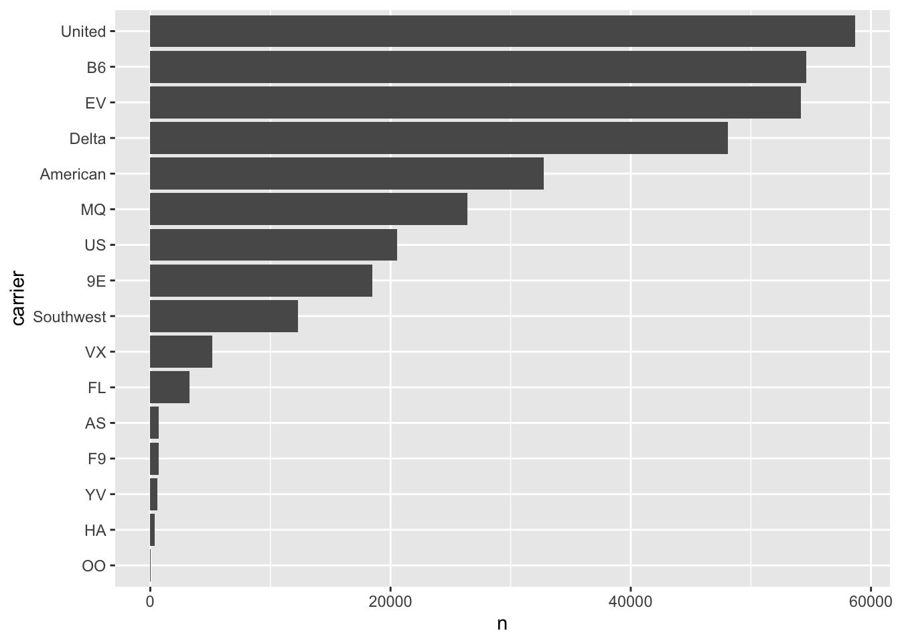

Code
tibble(
x = 1:5,
y = 1,
z = x ^ 2 + y
)Working effectively with data in R is greatly simplified by the tidyverse, a collection of packages designed for data science. The tidyverse provides a consistent framework for data manipulation, visualization, and modeling, which helps students learn generalizable skills rather than package-specific tricks.
A central concept in the tidyverse is thetibble, a modern re-imagining of the traditional R data frame. Tibbles keep the familiar two-dimensional table structure but introduce improvements such as preserving variable types, supporting list columns, and displaying data more cleanly in the console. These features make them easier to use in practice, especially with large datasets.
Finally, the idea of tidy data lies at the heart of the tidyverse. According to Hadley Wickham’s definition, tidy data means each variable forms a column, each observation forms a row, and each type of observational unit forms a table. Tidy data creates a standardized structure that enables smooth use of functions across the tidyverse, reducing the need for ad hoc data reshaping and making analyses more transparent and reproducible.
vignette("tibble")Tibbles are data frames that enhance the regular “old” data frame from base R. They keep the same two-dimensional tabular structure but are designed to be more consistent, predictable, and user-friendly.
There are several ways to create tibbles depending on the source of the data.
The simplest way is to build a tibble directly from vectors using tibble(). Inputs of length 1 are automatically recycled, and you can refer to variables you just created:
tibble(
x = 1:5,
y = 1,
z = x ^ 2 + y
)You can convert existing data structures into tibbles with as_tibble():
# From a data frame
head(as_tibble(iris))# From a list
as_tibble(list(x = 1:3, y = letters[1:3]))Packages in the tidyverse ecosystem return tibbles when reading data from files:
# From CSV, TSV, or delimited text file
head(readr::read_csv("data/Chetty_2014.csv"))# From Excel files
# readxl::read_excel("data.xlsx")You can also obtain tibbles when working with databases using packages such as DBI and dbplyr:
library(DBI)
con <- dbConnect(RSQLite::SQLite(), "mydb.sqlite")
tbl(con, "tablename") # returns a tibble-like objectA tribble is a transposed tibble, designed for small data entry in code. Column headings are defined by formulas that start with ~:
tribble(
~x, ~y, ~z,
#--|--|----
"a", 2, 3.6,
"b", 1, 8.5
)The tibble and readr packages are part of the core tidyverse, so they load automatically with library(tidyverse). Other packages such as readxl and dbplyr belong to the tidyverse ecosystem. They follow the same principles and return tibbles, but you need to load them explicitly.
Tibbles make fewer automatic changes than base R data frames:
For example:
tb <- tibble(
`:)` = "smile",
` ` = "space",
`2000` = "number"
)These column names would not be valid in base R, but are allowed in a tibble.
There are two main differences between tibbles and base R data frames:
Printing Tibbles have a refined print method that shows only the first 10 rows and only as many columns as fit on the screen:
tibble(
a = lubridate::now() + runif(1e3) * 86400,
b = lubridate::today() + runif(1e3) * 30,
c = 1:1e3,
d = runif(1e3),
e = sample(letters, 1e3, replace = TRUE)
) |> head()This design avoids overwhelming the console when printing large data frames.
If you need more output, you can adjust options:
print(n = , width = ) controls number of rows and columns.options(tibble.print_max = n, tibble.print_min = m)
options(tibble.print_min = Inf) # always show all rows
options(tibble.width = Inf) # always print all columnsSubsetting Most of the subsetting tools we have used so far generally subset the entire data frame. To pull out just a single variable or value, we can use $ and [[: - [[ extracts by name or position - $ extracts by name with less typing
df <- tibble(
x = runif(5),
y = rnorm(5)
)
# Extract by name
df$x[1] 0.93705938 0.89744407 0.30881152 0.01923029 0.52009777df[["x"]][1] 0.93705938 0.89744407 0.30881152 0.01923029 0.52009777# Extract by position
df[[1]][1] 0.93705938 0.89744407 0.30881152 0.01923029 0.52009777df[[1,1]][1] 0.9370594Structuring datasets to facilitate analysis is at the core of the principles of tidy data, as described by Hadley Wickham.
Tidy data follows three basic rules:
When these rules are not followed, the dataset is considered untidy. Common signs of untidy data include:
Most data encountered in practice will be untidy. This is because most people are not familiar with the principles of tidy data, and data is often organised to facilitate uses other than analysis, such as making entry easier.
Two common problems to look for are:
Usually, a dataset will only suffer from one of these problems.
To resolve them, the tidyr package provides two key functions:
pivot_longer()pivot_wider()These functions are illustrated with example datasets included in the tidyr package. The tables (table2, table4a) contain data on the number of tuberculosis (TB) cases recorded in different countries for the years 1999 and 2000. The variable cases represents the number of TB cases reported for a given country, year, and type of measure.
A common problem is a dataset where some of the column names are not variable names, but values of a variable:
table4aTo tidy a dataset like this, pivot the offending columns into a new pair of variables.
Steps:
year).cases).table4a |>
pivot_longer(c(`1999`, `2000`), names_to = "year", values_to = "cases")In the final result, the pivoted columns are dropped, and new year and cases columns are created. Other variables, such as country, are preserved. The cases column now explicitly records the number of TB cases for each year and country.
Function pivot_wider() is the opposite of pivot_longer(). You use it when an observation is scattered across multiple rows.
table2To tidy this up, analyze the representation in a similar way to pivot_longer():
table2 |>
pivot_wider(names_from = type, values_from = count)In this result, values of type (cases and population) become separate columns, and their associated numbers from count fill in the values. This produces a clearer dataset where each row corresponds to a country and year with distinct variables for cases and population.
The separate() function is used to pull apart one column into multiple columns by splitting wherever a separator character appears. This is useful when a single column actually contains more than one variable.
Consider the dataset table3 included in the tidyr package:
table3Notice the rate column. It contains two variables combined into a single column: the number of cases and the population size, separated by a forward slash. To make the dataset tidy, these should be split into separate variables.
The separate() function takes the name of the column to split and the names of the new columns to create:
table3 %>%
separate(rate, into = c("cases", "population"))This produces two new columns, cases and population, replacing the original rate column. The new columns now contain integer values for the reported tuberculosis cases and the population in each country and year.
By default, separate() splits values wherever it sees a non-alphanumeric character, meaning any character that is not a number or letter. In the example above, it automatically detected and split at the forward slash.
If you want to be explicit, you can specify the character to split on with the sep argument:
table3 %>%
separate(rate, into = c("cases", "population"), sep = "/")This ensures that the column is split exactly where expected, giving you clearer control over the separation process.
The unite() function is the inverse of separate(). It combines multiple columns into a single column. This can be useful when two or more variables are stored in separate columns but logically belong together.
Consider the dataset table5:
table5In this table, the year of observation is split into two columns, century and year. To make the dataset easier to work with, we can combine these into a single column.
table5 %>%
unite(new, century, year)By default, unite() places an underscore (_) between the values from different columns. In this case, that would produce values like 19_99.
If we want the numbers to run together without any separator, we can control this with the sep argument:
table5 %>%
unite(new, century, year, sep = "")This produces a single column new with values such as 1999 and 2000, giving a cleaner representation of the year variable.
Many datasets consist of multiple tables that are connected in a meaningful way. Together, such collections are called relational data. Each table stores information about a particular type of observation, and the relationships among these tables allow us to draw richer conclusions.
Why not store everything in one giant table? Because different kinds of observations naturally belong in different tables. For example, aircraft information does not change across flights, and weather data apply to all flights departing at a specific time from the same airport.
Keeping separate tables avoids duplication, reduces storage, and prevents inconsistencies when information changes. If the manufacturer name of a plane changes, updating one record in the planes table is enough, rather than updating thousands of flight records.
We use the nycflights13 package as an example again to illustrate. This package includes several tables describing all flights departing New York City in 2013.
library(nycflights13)
flights %>% select(year:day, hour, origin, dest, tailnum, carrier) %>% head()airlines %>% head()planes %>% select(tailnum, manufacturer, model, year) %>% head()airports %>% select(faa, name, lat, lon) %>% head()weather %>% select(origin, year:day, hour, temp, wind_speed) %>% head()Each table contains different but related information:
flights records each departure, including date, time, origin, destination, tail number, and carrier code.airlines provides the full airline names corresponding to carrier codes.airports gives the name and geographic location for each airport.planes contains aircraft details such as manufacturer and model.weather records hourly weather data for each origin airport.These tables are linked by shared variables. For example:
carrier links flights to airlines.tailnum links flights to planes.origin and dest link flights to airports.year, month, day, hour, and origin link flights to weather.A natural question to ask is: how can we combine information across these tables to answer questions such as:
To answer these questions, we must understand keys and joins.
A key identifies how observations in one table relate to those in another.
For example, in planes, the variable tailnum serves as a primary key because each aircraft has a unique tail number. In flights, the same variable acts as a foreign key since many flights can share the same aircraft.
We can verify whether a variable is a primary key by checking for uniqueness:
planes %>% count(tailnum) %>% filter(n > 1)No duplicates imply that tailnum is a valid primary key. We can also check whether every tailnum in flights appears in planes once we learn about filtering joins below.
It’s common for foreign keys to have missing matches. This may happen when aircraft were retired, renamed, or missing from the record. Always check unmatched keys before joining tables.
Mutating joins combine variables from two tables based on matching key values. They allow us to enrich one dataset with information from another.
There are four types of mutating Joins:
inner_join(x, y): keeps only rows with matching keys in both tables.left_join(x, y): keeps all rows from x, adding matches from y.right_join(x, y): keeps all rows from y, adding matches from x.full_join(x, y): keeps all rows from both tables.flights2 <- flights %>% select(year:day, hour, origin, dest, tailnum, carrier)
result <- flights2 %>% left_join(planes, by = "tailnum")
## compare dimensions
nrow(flights2)[1] 336776nrow(result)[1] 336776The number of rows in the result matches flights2 because left_join() keeps all flights, even those without matching tailnum records. Missing values appear for unmatched aircraft.
left_join() is most common because it preserves the main dataset. Use inner_join() only when you are sure you want to exclude records that do not match.
Filtering joins keep or exclude observations in one table based on whether they have a match in another. They do not add new columns.
semi_join(x, y): keeps rows in x that have a match in y.anti_join(x, y): keeps rows in x that do not have a match in y.Example: Flights with Known Planes
flights2 %>% semi_join(planes, by = "tailnum") %>% nrow()[1] 284170This keeps only flights that have aircraft information in planes.
Example: Flights with Unknown Planes
flights2 %>% anti_join(planes, by = "tailnum") %>% nrow()[1] 52606These flights are missing aircraft details. anti_join() is especially useful for finding unmatched keys and diagnosing data quality issues. For instance, you might use it to identify which flights are missing weather information or which airports have no corresponding records.
This is how we check how many flights lack corresponding aircraft information
flights %>% anti_join(planes, by = "tailnum") %>% nrow()[1] 52606semi_join() and anti_join()
Use semi_join() to filter data based on membership, and anti_join() to find mismatches. They are efficient tools for quality control and exploratory checks.
Relational data represent multiple connected tables describing related entities. Keeping separate tables helps minimize redundancy, reduce errors, and maintain data consistency. Understanding how these tables are linked through keys allows us to integrate information accurately. The tidyverse join functions make it straightforward to enrich, filter, and explore relational datasets such as the nycflights13 example.
Text data are common in real datasets. In the NYC flights example, variables such as airline names, airport codes, or weather descriptions are stored as strings. Because text data often includes noise, inconsistent capitalization, or embedded structure (like “city–state”), knowing how how to inspect, clean, and manipulate string variables is essential before analysis. The stringr package from the tidyverse offers consistent, easy-to-remember functions for string operations.
String functions in R are vectorized, meaning they act on each element of a vector. Let us look at examples using the airline names from the flights data.
airlines$name [1] "Endeavor Air Inc." "American Airlines Inc."
[3] "Alaska Airlines Inc." "JetBlue Airways"
[5] "Delta Air Lines Inc." "ExpressJet Airlines Inc."
[7] "Frontier Airlines Inc." "AirTran Airways Corporation"
[9] "Hawaiian Airlines Inc." "Envoy Air"
[11] "SkyWest Airlines Inc." "United Air Lines Inc."
[13] "US Airways Inc." "Virgin America"
[15] "Southwest Airlines Co." "Mesa Airlines Inc." str_length(airlines$name) [1] 17 22 20 15 20 24 22 27 22 9 21 21 15 14 22 18The function str_length() returns the number of characters in each element. Vectorization allows us to compute results for all airlines at once.
We can combine strings with str_c().
str_c("Flight to", airlines$name) [1] "Flight toEndeavor Air Inc."
[2] "Flight toAmerican Airlines Inc."
[3] "Flight toAlaska Airlines Inc."
[4] "Flight toJetBlue Airways"
[5] "Flight toDelta Air Lines Inc."
[6] "Flight toExpressJet Airlines Inc."
[7] "Flight toFrontier Airlines Inc."
[8] "Flight toAirTran Airways Corporation"
[9] "Flight toHawaiian Airlines Inc."
[10] "Flight toEnvoy Air"
[11] "Flight toSkyWest Airlines Inc."
[12] "Flight toUnited Air Lines Inc."
[13] "Flight toUS Airways Inc."
[14] "Flight toVirgin America"
[15] "Flight toSouthwest Airlines Co."
[16] "Flight toMesa Airlines Inc." This is not exactly what we wanted, because the default sep = "". We should add sep = " ".
We can extract substrings with str_sub().
str_sub(airlines$name, 1, 3) [1] "End" "Ame" "Ala" "Jet" "Del" "Exp" "Fro" "Air" "Haw" "Env" "Sky" "Uni"
[13] "US " "Vir" "Sou" "Mes"Simply put, str_c() joins elements with an optional separator. str_sub() extracts a substring between given positions. Both are vectorized.
Pattern matching is powerful for cleaning string variables. Suppose we want to know which airlines have names containing the word Air.
str_detect(airlines$name, "Air") [1] TRUE TRUE TRUE TRUE TRUE TRUE TRUE TRUE TRUE TRUE TRUE TRUE
[13] TRUE FALSE TRUE TRUEstr_subset(airlines$name, "Air") [1] "Endeavor Air Inc." "American Airlines Inc."
[3] "Alaska Airlines Inc." "JetBlue Airways"
[5] "Delta Air Lines Inc." "ExpressJet Airlines Inc."
[7] "Frontier Airlines Inc." "AirTran Airways Corporation"
[9] "Hawaiian Airlines Inc." "Envoy Air"
[11] "SkyWest Airlines Inc." "United Air Lines Inc."
[13] "US Airways Inc." "Southwest Airlines Co."
[15] "Mesa Airlines Inc." To replace part of a string, use str_replace():
str_replace(airlines$name, "Air", "Sky") [1] "Endeavor Sky Inc." "American Skylines Inc."
[3] "Alaska Skylines Inc." "JetBlue Skyways"
[5] "Delta Sky Lines Inc." "ExpressJet Skylines Inc."
[7] "Frontier Skylines Inc." "SkyTran Airways Corporation"
[9] "Hawaiian Skylines Inc." "Envoy Sky"
[11] "SkyWest Skylines Inc." "United Sky Lines Inc."
[13] "US Skyways Inc." "Virgin America"
[15] "Southwest Skylines Co." "Mesa Skylines Inc." Note the differences + str_replace() replaces only the first occurrence of a pattern in each string. + str_replace_all() replaces all occurrences of the pattern in each string.
Regular expressions can be used for flexible pattern specification. The following example finds airline names ending with Lines:
str_subset(airlines$name, "Air$")[1] "Envoy Air"When a variable contains multiple pieces of information in one column, we can split it into parts. For instance, separate origin and destination in a route.
routes <- flights %>%
mutate(route = str_c(origin, dest, sep = "->")) %>%
select(route)
head(routes$route)[1] "EWR->IAH" "LGA->IAH" "JFK->MIA" "JFK->BQN" "LGA->ATL" "EWR->ORD"str_split(head(routes$route), "->")[[1]]
[1] "EWR" "IAH"
[[2]]
[1] "LGA" "IAH"
[[3]]
[1] "JFK" "MIA"
[[4]]
[1] "JFK" "BQN"
[[5]]
[1] "LGA" "ATL"
[[6]]
[1] "EWR" "ORD"Function str_split() returns a list because each element may contain a different number of splits. Use str_c() or str_flatten() to join pieces again.
String variables often represent categorical information, such as airline names, weather conditions, or airport codes. In R, categorical data are better stored as factors, which record the unique categories (called levels) and store the data as integer codes internally. The forcats package provide utilities to handle such tasks.
library(forcats)
flights$carrier %>% head()[1] "UA" "UA" "AA" "B6" "DL" "UA"The carrier variable is currently a string. We can convert it to a factor using as_factor() or factor().
flights <- flights %>% mutate(carrier = as_factor(carrier))
levels(flights$carrier) [1] "UA" "AA" "B6" "DL" "EV" "MQ" "US" "WN" "VX" "FL" "AS" "9E" "F9" "HA" "YV"
[16] "OO"Each unique airline code becomes a level. Internally, R stores these levels as integers, which saves memory and allows efficient grouping.
Sometimes categories have a natural order, such as flight status (early, on time, late). Ordered factors preserve that ordering for display and modeling.
status <- factor(c("on time", "late", "early"),
levels = c("early", "on time", "late"),
ordered = TRUE)
status[1] on time late early
Levels: early < on time < lateWe often need to rename levels for clarity. The forcats package provides functions like fct_recode() and fct_collapse().
flights <- flights %>%
mutate(carrier = fct_recode(carrier,
"United" = "UA",
"Delta" = "DL",
"American" = "AA",
"Southwest" = "WN"
))
levels(flights$carrier) [1] "United" "American" "B6" "Delta" "EV" "MQ"
[7] "US" "Southwest" "VX" "FL" "AS" "9E"
[13] "F9" "HA" "YV" "OO" Factors can be reordered to reflect frequencies or another variable. For instance, we can order airlines by the number of flights.
flights %>%
count(carrier) %>%
mutate(carrier = fct_reorder(carrier, n)) %>%
ggplot(aes(x = carrier, y = n)) +
geom_col() +
coord_flip()
This visualization shows the most frequent carriers at the top. The fct_reorder() function makes the plot easier to interpret.
If we filter a dataset, some factor levels may no longer appear. We can remove them using fct_drop().
flights %>%
filter(carrier %in% c("Delta", "United")) %>%
mutate(carrier = fct_drop(carrier)) %>%
count(carrier)Proper factor handling ensures consistent grouping and clean visualization.
Flight departure and arrival times are examples of temporal data. The lubridate package makes it easier to parse and manipulate date-time values.
Package lubridate automatically recognizes common formats. Depending on whether the string starts with year, month, or day, we use different functions.
ymd("2025-10-07")[1] "2025-10-07"mdy("October 7, 2025")[1] "2025-10-07"dmy("07-10-2025")[1] "2025-10-07"These functions convert text to proper Date objects and eliminate format ambiguities.
The flights data include year, month, and day variables. The function make_date() combines them into a single Date column.
flights <- flights %>% mutate(fdate = make_date(year, month, day))
flights %>% select(year, month, day, fdate) %>% head()For date-times that include hours and minutes, make_datetime() is used:
flights <- flights %>%
mutate(dep_dt = make_datetime(year, month, day,
dep_time %/% 100, dep_time %% 100))
flights %>% select(dep_time, dep_dt) %>% head()Once a date-time object is created, components such as year, month, and hour can be extracted easily.
date_example <- ymd_hms("2025-10-07 14:30:00")
year(date_example)[1] 2025month(date_example, label = TRUE)[1] Oct
12 Levels: Jan < Feb < Mar < Apr < May < Jun < Jul < Aug < Sep < ... < Decday(date_example)[1] 7hour(date_example)[1] 14Arithmetic operations work naturally on date-time objects.
date_example + days(10)[1] "2025-10-17 14:30:00 UTC"date_example - hours(5)[1] "2025-10-07 09:30:00 UTC"Delays between departure and arrival can be computed by subtraction:
flights %>%
mutate(arr_dt = make_datetime(year, month, day,
arr_time %/% 100, arr_time %% 100),
delay_mins = as.numeric(difftime(arr_dt, dep_dt,
units = "mins"))) %>%
select(dep_dt, arr_dt, delay_mins) %>% head()We can examine how departure delays vary by hour of the day.
flights %>%
mutate(dep_dt = make_datetime(year, month, day,
dep_time %/% 100, dep_time %% 100)) %>%
group_by(hour = hour(dep_dt)) %>%
summarize(mean_delay = mean(dep_delay, na.rm = TRUE)) %>%
arrange(hour)